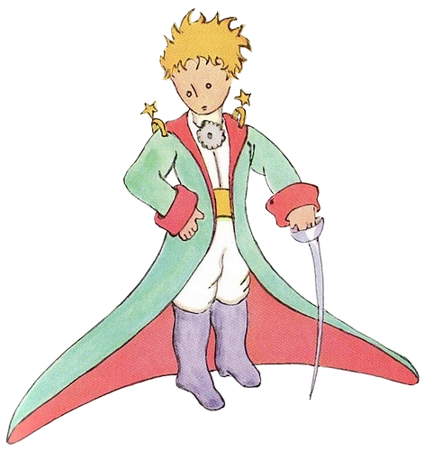

The Little Prince
The little prince is the main protagonist of the story. He is the personification of the fantasy world in the story, and the voice of children in the adult world. He is at times grave, amused, querulous, inquisitive, philosophical, curious, wilful, and kind. At the end of the tale, he asks the snake to bite him in order to send him back to his home planet where his beloved flower is.
